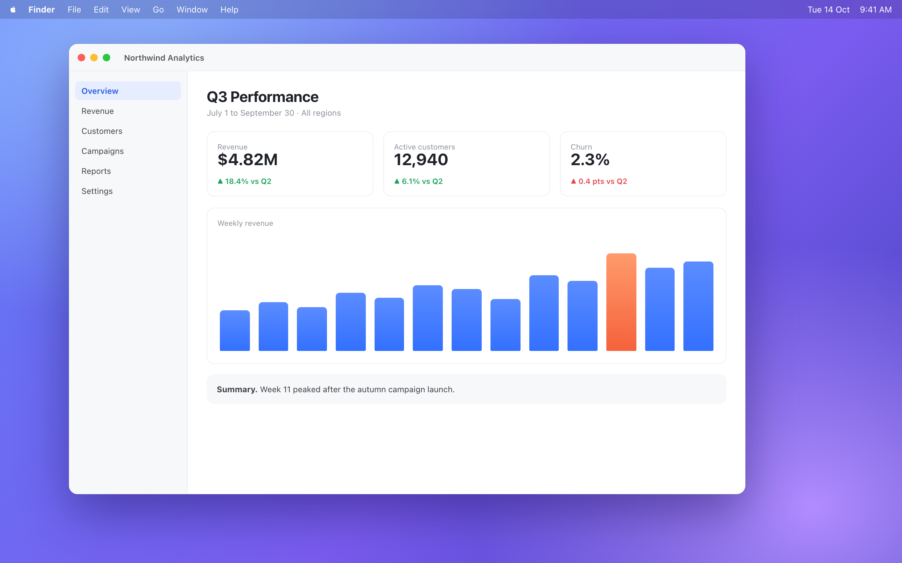
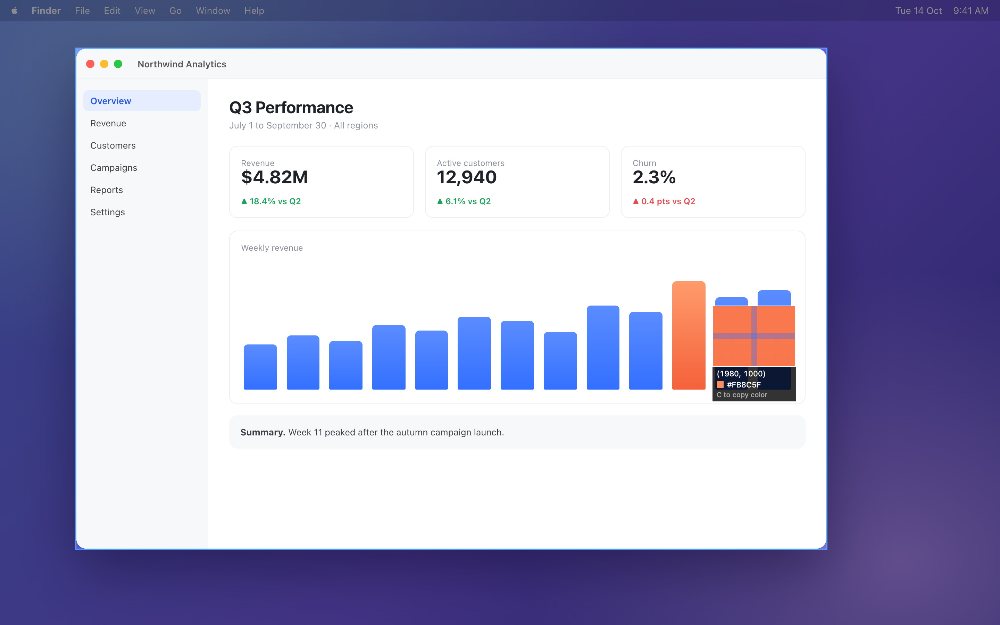
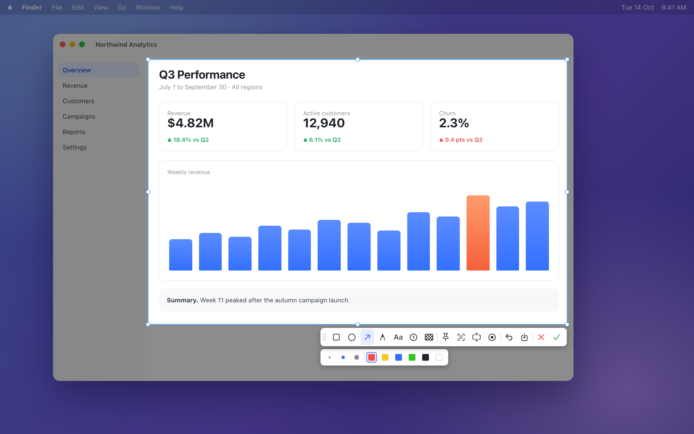
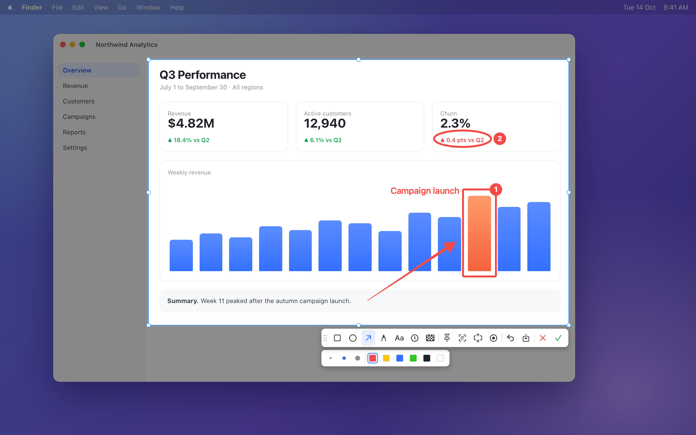
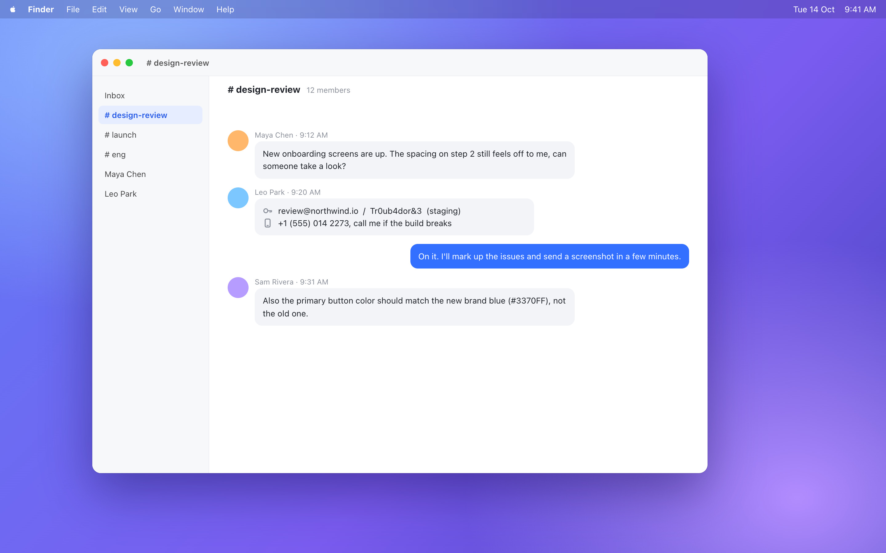

Screenshots for you
and your agent
Press ⌘⇧A Select, mark up, done.




⌘command
⇧shift
A
Copied. Paste it anywhere.
Scroll once, get the whole page


Record the flow as an MP4
Your agent does it too, with snip
agent

⌘⇧A for you.
snip for your agent.
github.com/anup-a/snip